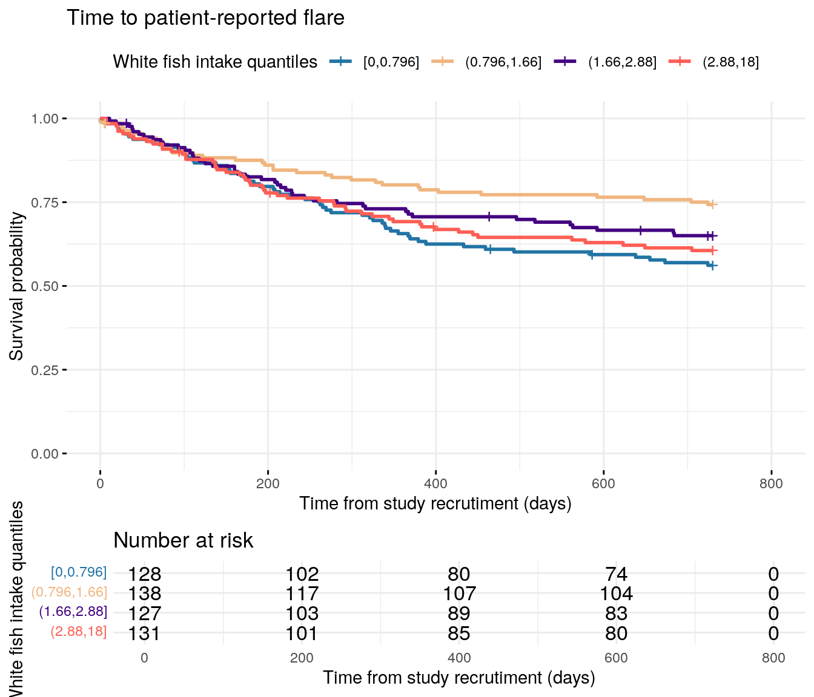
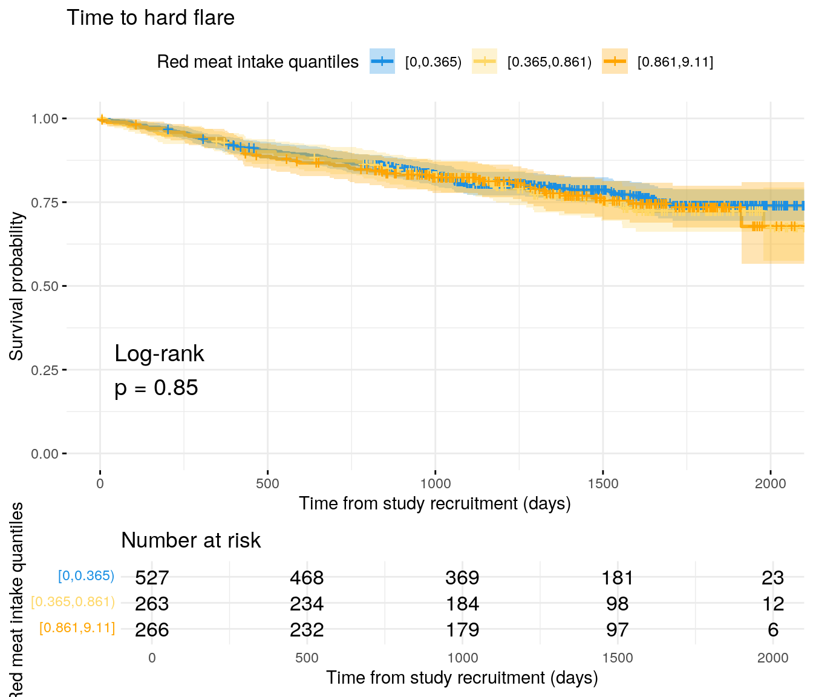
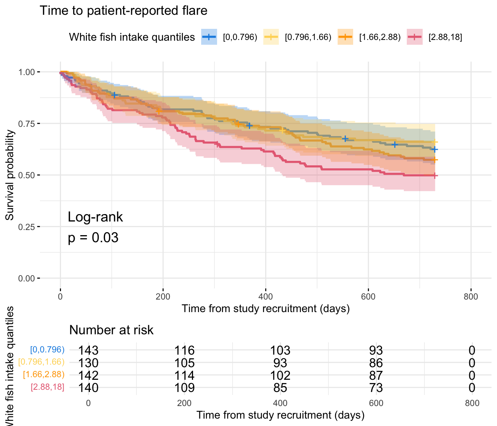
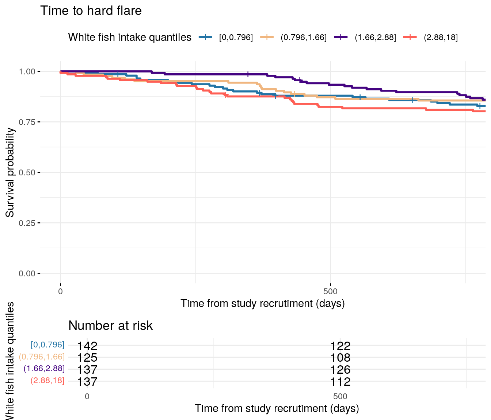

library(readxl)library(tidyverse)library(datefixR)library(survival)library(survminer)library(pander)library(coxme)library(finalfit)library(DescTools)library(gtsummary)# paths to PREdiCCt dataif(file.exists("/docker")){# If running in dockerdata.path<-"data/final/20221004/"redcap.path<-"data/final/20231030/"prefix<-"data/end-of-follow-up/"outdir<-"data/processed/"}else{# Run on OS directlydata.path<-"/Volumes/igmm/cvallejo-predicct/predicct/final/20221004/"redcap.path<-"/Volumes/igmm/cvallejo-predicct/predicct/final/20231030/"prefix<-"/Volumes/igmm/cvallejo-predicct/predicct/end-of-follow-up/"outdir<-"/Volumes/igmm/cvallejo-predicct/predicct/processed/"}demo<-readRDS(paste0(outdir, "demo-full.RDS"))demo$FC<-log(demo$FC)cox.summary<-function(fit){cat("Cox model summary:")fit%>%finalfit::fit2df(condense =FALSE)%>%knitr::kable( col.names =c("Variable","HR","Lower 95%","Upper 95%","P-value"), digits =4)%>%print()cat("\\newlineDiagnostics: \\newline")cat("\\newline::: {.panel-tabset} ")cat("###### Proportional hazards assumption test \\newline ")cox.zph(fit)$table%>%knitr::kable( col.names =c("","Chi-squared statistic","DF","P-value"), digits =4)%>%print()cat("\\newline###### DF betas \\newline ")print(ggcoxdiagnostics(fit, type ="dfbeta"))cat("\\newline###### Martingale residuals \\newline ")print(ggcoxdiagnostics(fit, type ="martingale", linear.predictions =TRUE))cat("\\newline::: ")return()}flare.df<-readRDS(paste0(outdir, "flares-biochem.RDS"))flare.cd.df<-readRDS(paste0(outdir, "flares-biochem-cd.RDS"))flare.uc.df<-readRDS(paste0(outdir, "flares-biochem-uc.RDS"))
Total meat protein
Protein intake from animal sources is not found to be significantly associated with flares in CD. However, there is evidence of an association for UC. At present, it is difficult to explore this in more detail (e.g. by meat type).
quants<-quantile(flare.df$Meat_sum, na.rm =TRUE)flare.cd.df$Meat_sum_cat<-cut(flare.cd.df$Meat_sum, breaks =c(0, quants[2:5]), include.lowest =TRUE)fit<-survfit(Surv(softflare_time, softflare)~Meat_sum_cat, data =flare.cd.df)p<-ggsurvplot(fit, data =flare.cd.df, conf.int =FALSE, ggtheme =theme_minimal(), risk.table =TRUE, legend.title ="Meat protein quantiles", legend.labs =levels(flare.cd.df$Meat_sum_cat), palette =c("#2274A5", "#F0B67F", "#440381", "#FE5F55"), xlab ="Time from study recrutiment (days)", title ="Time to clinical flare", break.time.by =200)saveRDS(p, paste0(outdir, "meat-cd-soft.RDS"))cairo_pdf("plots/cd/soft-flare/diet/meat.pdf")print(p, newpage =FALSE)invisible(dev.off())png("plots/cd/soft-flare/diet/meat.png", width =7, height =7, units ="in", res =300)print(p, newpage =FALSE)invisible(dev.off())print(p, newpage =FALSE)
Code
fit.me<-coxph(Surv(softflare_time, softflare)~Sex+cat+IMD+dqi_tot+Meat_sum+frailty(SiteNo), control =coxph.control(outer.max =20), data =flare.cd.df)invisible(cox.summary(fit.me))
Warning: `gather_()` was deprecated in tidyr 1.2.0.
ℹ Please use `gather()` instead.
ℹ The deprecated feature was likely used in the survminer package.
Please report the issue at <https://github.com/kassambara/survminer/issues>.
`geom_smooth()` using formula = 'y ~ x'
`geom_smooth()` using formula = 'y ~ x'
Code
fit<-survfit(Surv(hardflare_time, hardflare)~Meat_sum_cat, data =flare.cd.df)p<-ggsurvplot(fit, data =flare.cd.df, conf.int =FALSE, ggtheme =theme_minimal(), risk.table =TRUE, legend.title ="Meat protein quantiles", legend.labs =levels(flare.cd.df$Meat_sum_cat), palette =c("#2274A5", "#F0B67F", "#440381", "#FE5F55"), xlab ="Time from study recrutiment (days)", title ="Time to hard flare", break.time.by =500)saveRDS(p, paste0(outdir, "meat-cd-hard.RDS"))cairo_pdf("plots/cd/hard-flare/diet/meat.pdf")print(p, newpage =FALSE)invisible(dev.off())png("plots/cd/hard-flare/diet/meat.png", width =7, height =7, units ="in", res =300)print(p, newpage =FALSE)invisible(dev.off())print(p, newpage =FALSE)
Code
fit.me<-coxph(Surv(hardflare_time, hardflare)~Sex+cat+IMD+dqi_tot+Meat_sum+frailty(SiteNo), control =coxph.control(outer.max =20), data =flare.cd.df)invisible(cox.summary(fit.me))
flare.uc.df$Meat_sum_cat<-cut(flare.uc.df$Meat_sum, breaks =c(0, quants[2:5]), include.lowest =TRUE)fit<-survfit(Surv(softflare_time, softflare)~Meat_sum_cat, data =flare.uc.df)p<-ggsurvplot(fit, data =flare.uc.df, conf.int =FALSE, pval =FALSE, pval.method =TRUE, ggtheme =theme_minimal(), risk.table =TRUE, legend.title ="Meat protein quantiles", legend.labs =levels(flare.uc.df$Meat_sum_cat), palette =c("#2274A5", "#F0B67F", "#440381", "#FE5F55"), xlab ="Time from study recrutiment (days)", title ="Time to clinical flare", break.time.by =200)saveRDS(p, paste0(outdir, "meat-uc-soft.RDS"))cairo_pdf("plots/uc/soft-flare/diet/meat.pdf")print(p, newpage =FALSE)invisible(dev.off())png("plots/uc/soft-flare/diet/meat.png", width =7, height =7, units ="in", res =300)print(p, newpage =FALSE)invisible(dev.off())print(p, newpage =FALSE)
Code
fit.me<-coxph(Surv(softflare_time, softflare)~Sex+cat+IMD+dqi_tot+Meat_sum+frailty(SiteNo), control =coxph.control(outer.max =20), data =flare.uc.df)invisible(cox.summary(fit.me))
fit<-survfit(Surv(hardflare_time, hardflare)~Meat_sum_cat, data =flare.uc.df)p<-ggsurvplot(fit, data =flare.uc.df, conf.int =FALSE, pval =FALSE, pval.method =TRUE, ggtheme =theme_minimal(), risk.table =TRUE, legend.title ="Meat protein quantiles", legend.labs =levels(flare.uc.df$Meat_sum_cat), palette =c("#2274A5", "#F0B67F", "#440381", "#FE5F55"), xlab ="Time from study recrutiment (days)", title ="Time to hard flare", break.time.by =500)saveRDS(p, paste0(outdir, "meat-uc-hard.RDS"))cairo_pdf("plots/uc/hard-flare/diet/meat.pdf")print(p, newpage =FALSE)invisible(dev.off())png("plots/uc/hard-flare/diet/meat.png", width =7, height =7, units ="in", res =300)print(p, newpage =FALSE)invisible(dev.off())print(p, newpage =FALSE)
Code
fit.me<-coxph(Surv(hardflare_time, hardflare)~Sex+cat+IMD+dqi_tot+Meat_sum+frailty(SiteNo), control =coxph.control(outer.max =20), data =flare.uc.df)invisible(cox.summary(fit.me))
quants<-quantile(flare.df$meat_overall, na.rm =TRUE)flare.cd.df$meat_overall_cat<-cut(flare.cd.df$meat_overall, breaks =c(0, quants[2:5]))fit<-survfit(Surv(softflare_time, softflare)~meat_overall_cat, data =flare.cd.df)p<-ggsurvplot(fit, data =flare.cd.df, conf.int =FALSE, ggtheme =theme_minimal(), risk.table =TRUE, legend.title ="Meat intake quantiles", legend.labs =levels(flare.cd.df$meat_overall_cat), palette =c("#2274A5", "#F0B67F", "#440381", "#FE5F55"), xlab ="Time from study recrutiment (days)", title ="Time to clinical flare", break.time.by =200)cairo_pdf("plots/cd/soft-flare/diet/meat_overall.pdf")print(p, newpage =FALSE)invisible(dev.off())png("plots/cd/soft-flare/diet/meat_overall.png", width =7, height =7, units ="in", res =300)print(p, newpage =FALSE)invisible(dev.off())print(p, newpage =FALSE)
Code
fit.me<-coxph(Surv(softflare_time, softflare)~Sex+cat+IMD+dqi_tot+meat_overall+frailty(SiteNo), control =coxph.control(outer.max =20), data =flare.cd.df)invisible(cox.summary(fit.me))
fit<-survfit(Surv(hardflare_time, hardflare)~meat_overall_cat, data =flare.cd.df)p<-ggsurvplot(fit, data =flare.cd.df, conf.int =FALSE, ggtheme =theme_minimal(), risk.table =TRUE, legend.title ="Meat intake quantiles", legend.labs =levels(flare.cd.df$meat_overall_cat), palette =c("#2274A5", "#F0B67F", "#440381", "#FE5F55"), xlab ="Time from study recrutiment (days)", title ="Time to hard flare", break.time.by =500)cairo_pdf("plots/cd/hard-flare/diet/meat_overall.pdf")print(p, newpage =FALSE)invisible(dev.off())png("plots/cd/hard-flare/diet/meat_overall.png", width =7, height =7, units ="in", res =300)print(p, newpage =FALSE)invisible(dev.off())print(p, newpage =FALSE)
Code
fit.me<-coxph(Surv(hardflare_time, hardflare)~Sex+cat+IMD+dqi_tot+meat_overall+frailty(SiteNo), control =coxph.control(outer.max =20), data =flare.cd.df)invisible(cox.summary(fit.me))
flare.uc.df$meat_overall_cat<-cut(flare.uc.df$meat_overall, breaks =c(0, quants[2:5]))fit<-survfit(Surv(softflare_time, softflare)~meat_overall_cat, data =flare.uc.df)p<-ggsurvplot(fit, data =flare.uc.df, conf.int =FALSE, pval =FALSE, pval.method =TRUE, ggtheme =theme_minimal(), risk.table =TRUE, legend.title ="Meat intake quantiles", legend.labs =levels(flare.uc.df$meat_overall_cat), palette =c("#2274A5", "#F0B67F", "#440381", "#FE5F55"), xlab ="Time from study recrutiment (days)", title ="Time to clinical flare", break.time.by =200)cairo_pdf("plots/uc/soft-flare/diet/meat_overall.pdf")print(p, newpage =FALSE)invisible(dev.off())png("plots/uc/soft-flare/diet/meat_overall.png", width =7, height =7, units ="in", res =300)print(p, newpage =FALSE)invisible(dev.off())print(p, newpage =FALSE)
Code
fit.me<-coxph(Surv(softflare_time, softflare)~Sex+cat+IMD+dqi_tot+meat_overall+frailty(SiteNo), control =coxph.control(outer.max =20), data =flare.uc.df)invisible(cox.summary(fit.me))
fit<-survfit(Surv(hardflare_time, hardflare)~meat_overall_cat, data =flare.uc.df)p<-ggsurvplot(fit, data =flare.uc.df, conf.int =FALSE, pval =FALSE, pval.method =TRUE, ggtheme =theme_minimal(), risk.table =TRUE, legend.title ="Meat intake quantiles", legend.labs =levels(flare.uc.df$meat_overall_cat), palette =c("#2274A5", "#F0B67F", "#440381", "#FE5F55"), xlab ="Time from study recrutiment (days)", title ="Time to hard flare", break.time.by =500)cairo_pdf("plots/uc/hard-flare/diet/meat_overall.pdf")print(p, newpage =FALSE)invisible(dev.off())png("plots/uc/hard-flare/diet/meat_overall.png", width =7, height =7, units ="in", res =300)print(p, newpage =FALSE)invisible(dev.off())print(p, newpage =FALSE)
Code
fit.me<-coxph(Surv(hardflare_time, hardflare)~Sex+cat+IMD+dqi_tot+meat_overall+frailty(SiteNo), control =coxph.control(outer.max =20), data =flare.uc.df)invisible(cox.summary(fit.me))
quants<-quantile(flare.df$fish_overall, na.rm =TRUE)flare.cd.df$fish_overall_cat<-cut(flare.cd.df$fish_overall, breaks =c(0, quants[2:5]))fit<-survfit(Surv(softflare_time, softflare)~fish_overall_cat, data =flare.cd.df)p<-ggsurvplot(fit, data =flare.cd.df, conf.int =FALSE, ggtheme =theme_minimal(), risk.table =TRUE, legend.title ="Fish intake quantiles", legend.labs =levels(flare.cd.df$fish_overall_cat), palette =c("#2274A5", "#F0B67F", "#440381", "#FE5F55"), xlab ="Time from study recrutiment (days)", title ="Time to clinical flare", break.time.by =200)cairo_pdf("plots/cd/soft-flare/diet/fish_overall.pdf")print(p, newpage =FALSE)invisible(dev.off())png("plots/cd/soft-flare/diet/fish_overall.png", width =7, height =7, units ="in", res =300)print(p, newpage =FALSE)invisible(dev.off())print(p, newpage =FALSE)
Code
fit.me<-coxph(Surv(softflare_time, softflare)~Sex+cat+IMD+dqi_tot+fish_overall+frailty(SiteNo), control =coxph.control(outer.max =20), data =flare.cd.df)invisible(cox.summary(fit.me))
fit<-survfit(Surv(hardflare_time, hardflare)~fish_overall_cat, data =flare.cd.df)p<-ggsurvplot(fit, data =flare.cd.df, conf.int =FALSE, ggtheme =theme_minimal(), risk.table =TRUE, legend.title ="Fish intake quantiles", legend.labs =levels(flare.cd.df$fish_overall_cat), palette =c("#2274A5", "#F0B67F", "#440381", "#FE5F55"), xlab ="Time from study recrutiment (days)", title ="Time to hard flare", break.time.by =500)cairo_pdf("plots/cd/hard-flare/diet/fish_overall.pdf")print(p, newpage =FALSE)invisible(dev.off())png("plots/cd/hard-flare/diet/fish_overall.png", width =7, height =7, units ="in", res =300)print(p, newpage =FALSE)invisible(dev.off())print(p, newpage =FALSE)
Code
fit.me<-coxph(Surv(hardflare_time, hardflare)~Sex+cat+IMD+dqi_tot+BMI+fish_overall+frailty(SiteNo), control =coxph.control(outer.max =20), data =flare.cd.df)invisible(cox.summary(fit.me))
flare.uc.df$fish_overall_cat<-cut(flare.uc.df$fish_overall, breaks =c(0, quants[2:5]))fit<-survfit(Surv(softflare_time, softflare)~fish_overall_cat, data =flare.uc.df)p<-ggsurvplot(fit, data =flare.uc.df, conf.int =FALSE, pval =FALSE, pval.method =TRUE, ggtheme =theme_minimal(), risk.table =TRUE, legend.title ="Fish intake quantiles", legend.labs =levels(flare.uc.df$fish_overall_cat), palette =c("#2274A5", "#F0B67F", "#440381", "#FE5F55"), xlab ="Time from study recrutiment (days)", title ="Time to clinical flare", break.time.by =200)cairo_pdf("plots/uc/soft-flare/diet/fish_overall.pdf")print(p, newpage =FALSE)invisible(dev.off())png("plots/uc/soft-flare/diet/fish_overall.png", width =7, height =7, units ="in", res =300)print(p, newpage =FALSE)invisible(dev.off())print(p, newpage =FALSE)
Code
fit.me<-coxph(Surv(softflare_time, softflare)~Sex+cat+IMD+dqi_tot+BMI+fish_overall+frailty(SiteNo), control =coxph.control(outer.max =20), data =flare.uc.df)invisible(cox.summary(fit.me))
fit<-survfit(Surv(hardflare_time, hardflare)~fish_overall_cat, data =flare.uc.df)p<-ggsurvplot(fit, data =flare.uc.df, conf.int =FALSE, pval =FALSE, pval.method =TRUE, ggtheme =theme_minimal(), risk.table =TRUE, legend.title ="Fish intake quantiles", legend.labs =levels(flare.uc.df$fish_overall_cat), palette =c("#2274A5", "#F0B67F", "#440381", "#FE5F55"), xlab ="Time from study recrutiment (days)", title ="Time to hard flare", break.time.by =500)cairo_pdf("plots/uc/hard-flare/diet/fish_overall.pdf")print(p, newpage =FALSE)invisible(dev.off())png("plots/uc/hard-flare/diet/fish_overall.png", width =7, height =7, units ="in", res =300)print(p, newpage =FALSE)invisible(dev.off())print(p, newpage =FALSE)
Code
fit.me<-coxph(Surv(hardflare_time, hardflare)~Sex+cat+IMD+dqi_tot+BMI+fish_overall+frailty(SiteNo), control =coxph.control(outer.max =20), data =flare.uc.df)invisible(cox.summary(fit.me))
quants<-quantile(flare.df$fibre, na.rm =TRUE)flare.cd.df$fibre_cat<-cut(flare.cd.df$fibre, breaks =c(0, quants[2:5]), include.lowest =TRUE)fit<-survfit(Surv(softflare_time, softflare)~fibre_cat, data =flare.cd.df)p<-ggsurvplot(fit, data =flare.cd.df, conf.int =FALSE, ggtheme =theme_minimal(), risk.table =TRUE, legend.title ="Fibre quantiles", legend.labs =levels(flare.cd.df$fibre_cat), palette =c("#2274A5", "#F0B67F", "#440381", "#FE5F55"), xlab ="Time from study recrutiment (days)", title ="Time to clinical flare", break.time.by =200)cairo_pdf("plots/cd/soft-flare/diet/fibre.pdf")print(p, newpage =FALSE)invisible(dev.off())png("plots/cd/soft-flare/diet/fibre.png", width =7, height =7, units ="in", res =300)print(p, newpage =FALSE)invisible(dev.off())print(p, newpage =FALSE)
Code
fit.me<-coxph(Surv(softflare_time, softflare)~Sex+cat+IMD+dqi_tot+BMI+fibre+frailty(SiteNo), control =coxph.control(outer.max =20), data =flare.cd.df)invisible(cox.summary(fit.me))
fit<-survfit(Surv(hardflare_time, hardflare)~fibre_cat, data =flare.cd.df)p<-ggsurvplot(fit, data =flare.cd.df, conf.int =FALSE, ggtheme =theme_minimal(), risk.table =TRUE, legend.title ="Fibre quantiles", legend.labs =levels(flare.cd.df$fibre_cat), palette =c("#2274A5", "#F0B67F", "#440381", "#FE5F55"), xlab ="Time from study recrutiment (days)", title ="Time to hard flare", break.time.by =500)cairo_pdf("plots/cd/hard-flare/diet/fibre.pdf")print(p, newpage =FALSE)invisible(dev.off())png("plots/cd/hard-flare/diet/fibre.png", width =7, height =7, units ="in", res =300)print(p, newpage =FALSE)invisible(dev.off())print(p, newpage =FALSE)
Code
fit.me<-coxph(Surv(hardflare_time, hardflare)~Sex+cat+IMD+dqi_tot+BMI+fibre+frailty(SiteNo), control =coxph.control(outer.max =20), data =flare.cd.df)invisible(cox.summary(fit.me))
flare.uc.df$fibre_cat<-cut(flare.uc.df$fibre, breaks =c(0, quants[2:5]), include.lowest =TRUE)fit<-survfit(Surv(softflare_time, softflare)~fibre_cat, data =flare.uc.df)p<-ggsurvplot(fit, data =flare.uc.df, conf.int =FALSE, pval =FALSE, pval.method =TRUE, ggtheme =theme_minimal(), risk.table =TRUE, legend.title ="Fibre quantiles", legend.labs =levels(flare.uc.df$fibre_cat), palette =c("#2274A5", "#F0B67F", "#440381", "#FE5F55"), xlab ="Time from study recrutiment (days)", title ="Time to clinical flare", break.time.by =200)cairo_pdf("plots/uc/soft-flare/diet/fibre.pdf")print(p, newpage =FALSE)invisible(dev.off())png("plots/uc/soft-flare/diet/fibre.png", width =7, height =7, units ="in", res =300)print(p, newpage =FALSE)invisible(dev.off())print(p, newpage =FALSE)
Code
fit.me<-coxph(Surv(softflare_time, softflare)~Sex+cat+IMD+dqi_tot+BMI+fibre+frailty(SiteNo), control =coxph.control(outer.max =20), data =flare.uc.df)invisible(cox.summary(fit.me))
fit<-survfit(Surv(hardflare_time, hardflare)~fibre_cat, data =flare.uc.df)p<-ggsurvplot(fit, data =flare.uc.df, conf.int =FALSE, pval =FALSE, pval.method =TRUE, ggtheme =theme_minimal(), risk.table =TRUE, legend.title ="Fibre quantiles", legend.labs =levels(flare.uc.df$fibre_cat), palette =c("#2274A5", "#F0B67F", "#440381", "#FE5F55"), xlab ="Time from study recrutiment (days)", title ="Time to hard flare", break.time.by =500)cairo_pdf("plots/uc/hard-flare/diet/fibre.pdf")print(p, newpage =FALSE)invisible(dev.off())png("plots/uc/hard-flare/diet/fibre.png", width =7, height =7, units ="in", res =300)print(p, newpage =FALSE)invisible(dev.off())print(p, newpage =FALSE)
Code
fit.me<-coxph(Surv(hardflare_time, hardflare)~Sex+cat+IMD+dqi_tot+BMI+fibre+frailty(SiteNo), control =coxph.control(outer.max =20), data =flare.uc.df)invisible(cox.summary(fit.me))
The SAP states n-6 PUFAs will be investigated. However, the FFQ data extract lists PUFA collectively, presumably describing both n-3 and n-6 PUFAs. For now, these data will be used.
quants<-quantile(flare.df$PUFA_percEng, na.rm =TRUE)flare.cd.df$PUFA_cat<-cut(flare.cd.df$PUFA_percEng, breaks =c(0, quants[2:5]), include.lowest =TRUE)fit<-survfit(Surv(softflare_time, softflare)~PUFA_cat, data =flare.cd.df)p<-ggsurvplot(fit, data =flare.cd.df, conf.int =FALSE, ggtheme =theme_minimal(), risk.table =TRUE, legend.title ="PUFA intake (by g) quantiles", legend.labs =levels(flare.cd.df$PUFA_cat), palette =c("#2274A5", "#F0B67F", "#440381", "#FE5F55"), xlab ="Time from study recrutiment (days)", title ="Time to clinical flare", break.time.by =200)cairo_pdf("plots/cd/soft-flare/diet/pufa.pdf")print(p, newpage =FALSE)invisible(dev.off())png("plots/cd/soft-flare/diet/pufa.png", width =7, height =7, units ="in", res =300)print(p, newpage =FALSE)invisible(dev.off())print(p, newpage =FALSE)
Code
fit.me<-coxph(Surv(softflare_time, softflare)~Sex+cat+IMD+PUFA_percEng+frailty(SiteNo), control =coxph.control(outer.max =20), data =flare.cd.df)invisible(cox.summary(fit.me))
fit<-survfit(Surv(hardflare_time, hardflare)~PUFA_cat, data =flare.cd.df)p<-ggsurvplot(fit, data =flare.cd.df, conf.int =FALSE, ggtheme =theme_minimal(), risk.table =TRUE, legend.title ="PUFA intake (by g) quantiles", legend.labs =levels(flare.cd.df$PUFA_cat), palette =c("#2274A5", "#F0B67F", "#440381", "#FE5F55"), xlab ="Time from study recrutiment (days)", title ="Time to hard flare", break.time.by =500)cairo_pdf("plots/cd/hard-flare/diet/pufa.pdf")print(p, newpage =FALSE)invisible(dev.off())png("plots/cd/hard-flare/diet/pufa.png", width =7, height =7, units ="in", res =300)print(p, newpage =FALSE)invisible(dev.off())print(p, newpage =FALSE)
Code
fit.me<-coxph(Surv(hardflare_time, hardflare)~Sex+cat+IMD+dqi_tot+BMI+PUFA_percEng+frailty(SiteNo), control =coxph.control(outer.max =20), data =flare.cd.df)invisible(cox.summary(fit.me))
flare.uc.df$PUFA_cat<-cut(flare.uc.df$PUFA_percEng, breaks =c(0, quants[2:5]), include.lowest =TRUE)fit<-survfit(Surv(softflare_time, softflare)~PUFA_cat, data =flare.uc.df)p<-ggsurvplot(fit, data =flare.uc.df, conf.int =FALSE, pval =FALSE, pval.method =TRUE, ggtheme =theme_minimal(), risk.table =TRUE, legend.title ="PUFA intake (by g) quantiles", legend.labs =levels(flare.uc.df$fibre_cat), palette =c("#2274A5", "#F0B67F", "#440381", "#FE5F55"), xlab ="Time from study recrutiment (days)", title ="Time to clinical flare", break.time.by =200)cairo_pdf("plots/uc/soft-flare/diet/pufa.pdf")print(p, newpage =FALSE)invisible(dev.off())png("plots/uc/soft-flare/diet/pufa.png", width =7, height =7, units ="in", res =300)print(p, newpage =FALSE)invisible(dev.off())print(p, newpage =FALSE)
Code
fit.me<-coxph(Surv(softflare_time, softflare)~Sex+cat+IMD+dqi_tot+BMI+PUFA_percEng+frailty(SiteNo), control =coxph.control(outer.max =20), data =flare.uc.df)invisible(cox.summary(fit.me))
fit<-survfit(Surv(hardflare_time, hardflare)~PUFA_cat, data =flare.uc.df)p<-ggsurvplot(fit, data =flare.uc.df, conf.int =FALSE, pval =FALSE, pval.method =TRUE, ggtheme =theme_minimal(), risk.table =TRUE, legend.title ="PUFA intake (by g) quantiles", legend.labs =levels(flare.uc.df$PUFA_cat), palette =c("#2274A5", "#F0B67F", "#440381", "#FE5F55"), xlab ="Time from study recrutiment (days)", title ="Time to hard flare", break.time.by =500)cairo_pdf("plots/uc/hard-flare/diet/pufa.pdf")print(p, newpage =FALSE)invisible(dev.off())png("plots/uc/hard-flare/diet/pufa.png", width =7, height =7, units ="in", res =300)print(p, newpage =FALSE)invisible(dev.off())print(p, newpage =FALSE)
Code
fit.me<-coxph(Surv(hardflare_time, hardflare)~Sex+cat+IMD+dqi_tot+BMI+PUFA_percEng+frailty(SiteNo), control =coxph.control(outer.max =20), data =flare.uc.df)invisible(cox.summary(fit.me))
The SAP states emulsifiers (specifically lecithin) will be investigated. However, data on emulsifiers are not available in the FFQ data extract. As a proxy for emulsifiers, this report will look at ultra-processed foods via Nova scores (Monteiro et al. 2017).
fit<-survfit(Surv(softflare_time, softflare)~NOVAScore_cat, data =flare.cd.df)p<-ggsurvplot(fit, data =flare.cd.df, conf.int =FALSE, ggtheme =theme_minimal(), risk.table =TRUE, legend.title ="Nova score", legend.labs =levels(flare.cd.df$NOVAScore_cat), palette =c("#2274A5", "#F0B67F", "#440381", "#FE5F55"), xlab ="Time from study recrutiment (days)", title ="Time to clinical flare", break.time.by =200)cairo_pdf("plots/cd/soft-flare/diet/nova.pdf")print(p, newpage =FALSE)invisible(dev.off())png("plots/cd/soft-flare/diet/nova.png", width =7, height =7, units ="in", res =300)print(p, newpage =FALSE)invisible(dev.off())print(p, newpage =FALSE)
Code
fit.me<-coxph(Surv(softflare_time, softflare)~Sex+cat+IMD+dqi_tot+BMI+NOVAScore_cat+frailty(SiteNo), control =coxph.control(outer.max =20), data =flare.cd.df)invisible(cox.summary(fit.me))
fit<-survfit(Surv(hardflare_time, hardflare)~NOVAScore_cat, data =flare.cd.df)p<-ggsurvplot(fit, data =flare.cd.df, conf.int =FALSE, ggtheme =theme_minimal(), risk.table =TRUE, legend.title ="Nova Score", legend.labs =levels(flare.cd.df$NOVAScore_cat), palette =c("#2274A5", "#F0B67F", "#440381", "#FE5F55"), xlab ="Time from study recrutiment (days)", title ="Time to hard flare", break.time.by =500)cairo_pdf("plots/cd/hard-flare/diet/nova.pdf")print(p, newpage =FALSE)invisible(dev.off())png("plots/cd/hard-flare/diet/nova.png", width =7, height =7, units ="in", res =300)print(p, newpage =FALSE)invisible(dev.off())print(p, newpage =FALSE)
Code
fit.me<-coxph(Surv(hardflare_time, hardflare)~Sex+cat+IMD+dqi_tot+BMI+NOVAScore_cat+frailty(SiteNo), control =coxph.control(outer.max =20), data =flare.cd.df)invisible(cox.summary(fit.me))
#|fit<-survfit(Surv(softflare_time, softflare)~NOVAScore_cat, data =flare.uc.df)p<-ggsurvplot(fit, data =flare.uc.df, conf.int =FALSE, pval =FALSE, pval.method =TRUE, ggtheme =theme_minimal(), risk.table =TRUE, legend.title ="Nova score", legend.labs =levels(flare.uc.df$NOVAScore_cat), palette =c("#2274A5", "#F0B67F", "#440381", "#FE5F55"), xlab ="Time from study recrutiment (days)", title ="Time to clinical flare", break.time.by =200)cairo_pdf("plots/uc/soft-flare/diet/nova.pdf")print(p, newpage =FALSE)invisible(dev.off())png("plots/uc/soft-flare/diet/nova.png", width =7, height =7, units ="in", res =300)print(p, newpage =FALSE)invisible(dev.off())print(p, newpage =FALSE)
Code
fit.me<-coxph(Surv(softflare_time, softflare)~Sex+cat+IMD+dqi_tot+BMI+NOVAScore_cat+frailty(SiteNo), control =coxph.control(outer.max =20), data =flare.uc.df)invisible(cox.summary(fit.me))
fit<-survfit(Surv(hardflare_time, hardflare)~NOVAScore_cat, data =flare.uc.df)p<-ggsurvplot(fit, data =flare.uc.df, conf.int =FALSE, pval =FALSE, pval.method =TRUE, ggtheme =theme_minimal(), risk.table =TRUE, legend.title ="Nova score", legend.labs =levels(flare.uc.df$NOVAScore_cat), palette =c("#2274A5", "#F0B67F", "#440381", "#FE5F55"), xlab ="Time from study recrutiment (days)", title ="Time to hard flare", break.time.by =500)cairo_pdf("plots/uc/hard-flare/diet/nova.pdf")print(p, newpage =FALSE)invisible(dev.off())png("plots/uc/hard-flare/diet/nova.png", width =7, height =7, units ="in", res =300)print(p, newpage =FALSE)invisible(dev.off())print(p, newpage =FALSE)
Code
fit.me<-coxph(Surv(hardflare_time, hardflare)~Sex+cat+IMD+dqi_tot+BMI+NOVAScore_cat+frailty(SiteNo), control =coxph.control(outer.max =20), data =flare.uc.df)invisible(cox.summary(fit.me))
As an alternative approach to characterising ultra-processed food, we considered the percentage of daily energy intake sourced from ultra-processed food and drink (Nova 4).
quants<-quantile(flare.df$UPF_perc, na.rm =TRUE)flare.cd.df$UPF_perc_cat<-cut(flare.cd.df$UPF_perc, breaks =c(0, quants[2:5]))fit<-survfit(Surv(softflare_time, softflare)~UPF_perc_cat, data =flare.cd.df)p<-ggsurvplot(fit, data =flare.cd.df, conf.int =FALSE, ggtheme =theme_minimal(), risk.table =TRUE, legend.title ="UPF as % of energy", legend.labs =levels(flare.cd.df$UPF_perc_cat), palette =c("#2274A5", "#F0B67F", "#440381", "#FE5F55"), xlab ="Time from study recrutiment (days)", title ="Time to clinical flare", break.time.by =200)cairo_pdf("plots/cd/soft-flare/diet/UPF.pdf")print(p, newpage =FALSE)invisible(dev.off())png("plots/cd/soft-flare/diet/UPF.png", width =7, height =7, units ="in", res =300)print(p, newpage =FALSE)invisible(dev.off())print(p, newpage =FALSE)
Code
fit.me<-coxph(Surv(softflare_time, softflare)~Sex+cat+IMD+dqi_tot+BMI+UPF_perc+frailty(SiteNo), control =coxph.control(outer.max =20), data =flare.cd.df)invisible(cox.summary(fit.me))
fit<-survfit(Surv(hardflare_time, hardflare)~UPF_perc_cat, data =flare.cd.df)p<-ggsurvplot(fit, data =flare.cd.df, conf.int =FALSE, ggtheme =theme_minimal(), risk.table =TRUE, legend.title ="UPF as % of energy", legend.labs =levels(flare.cd.df$UPF_perc_cat), palette =c("#2274A5", "#F0B67F", "#440381", "#FE5F55"), xlab ="Time from study recrutiment (days)", title ="Time to hard flare", break.time.by =500)cairo_pdf("plots/cd/hard-flare/diet/UPF.pdf")print(p, newpage =FALSE)invisible(dev.off())png("plots/cd/hard-flare/diet/UPF.png", width =7, height =7, units ="in", res =300)print(p, newpage =FALSE)invisible(dev.off())print(p, newpage =FALSE)
Code
fit.me<-coxph(Surv(hardflare_time, hardflare)~Sex+cat+IMD+dqi_tot+BMI+UPF_perc+frailty(SiteNo), control =coxph.control(outer.max =20), data =flare.cd.df)invisible(cox.summary(fit.me))
flare.uc.df$UPF_perc_cat<-cut(flare.uc.df$UPF_perc, breaks =c(0, quants[2:5]))fit<-survfit(Surv(softflare_time, softflare)~UPF_perc_cat, data =flare.uc.df)p<-ggsurvplot(fit, data =flare.uc.df, conf.int =FALSE, pval =FALSE, pval.method =TRUE, ggtheme =theme_minimal(), risk.table =TRUE, legend.title ="UPF as % of energy", legend.labs =levels(flare.uc.df$UPF_perc_cat), palette =c("#2274A5", "#F0B67F", "#440381", "#FE5F55"), xlab ="Time from study recrutiment (days)", title ="Time to clinical flare", break.time.by =200)cairo_pdf("plots/uc/soft-flare/diet/UPF.pdf")print(p, newpage =FALSE)invisible(dev.off())png("plots/uc/soft-flare/diet/UPF.png", width =7, height =7, units ="in", res =300)print(p, newpage =FALSE)invisible(dev.off())print(p, newpage =FALSE)
Code
fit.me<-coxph(Surv(softflare_time, softflare)~Sex+cat+IMD+dqi_tot+BMI+UPF_perc+frailty(SiteNo), control =coxph.control(outer.max =20), data =flare.uc.df)invisible(cox.summary(fit.me))
fit<-survfit(Surv(hardflare_time, hardflare)~UPF_perc_cat, data =flare.uc.df)p<-ggsurvplot(fit, data =flare.uc.df, conf.int =FALSE, pval =FALSE, pval.method =TRUE, ggtheme =theme_minimal(), risk.table =TRUE, legend.title ="UPF as % of energy", legend.labs =levels(flare.uc.df$UPF_perc_cat), palette =c("#2274A5", "#F0B67F", "#440381", "#FE5F55"), xlab ="Time from study recrutiment (days)", title ="Time to hard flare", break.time.by =500)cairo_pdf("plots/uc/hard-flare/diet/UPF.pdf")print(p, newpage =FALSE)invisible(dev.off())png("plots/uc/hard-flare/diet/UPF.png", width =7, height =7, units ="in", res =300)print(p, newpage =FALSE)invisible(dev.off())print(p, newpage =FALSE)
Code
fit.me<-coxph(Surv(hardflare_time, hardflare)~Sex+cat+IMD+dqi_tot+BMI+UPF_perc+frailty(SiteNo), control =coxph.control(outer.max =20), data =flare.uc.df)invisible(cox.summary(fit.me))
quants<-quantile(flare.df$breadIntake, na.rm =TRUE)flare.cd.df$breadIntake_cat<-cut(flare.cd.df$breadIntake, breaks =c(0, quants[2:5]), include.lowest =TRUE)fit<-survfit(Surv(softflare_time, softflare)~breadIntake_cat, data =flare.cd.df)p<-ggsurvplot(fit, data =flare.cd.df, conf.int =FALSE, ggtheme =theme_minimal(), risk.table =TRUE, legend.title ="Bread/cereal intake quantiles", legend.labs =levels(flare.cd.df$breadIntake_cat), palette =c("#2274A5", "#F0B67F", "#440381", "#FE5F55"), xlab ="Time from study recrutiment (days)", title ="Time to patient-reported flare", break.time.by =200)cairo_pdf("plots/cd/soft-flare/diet/breadIntake.pdf")pinvisible(dev.off())png("plots/cd/soft-flare/diet/breadIntake.png", width =7, height =7, units ="in", res =300)pinvisible(dev.off())p
Code
fit.me<-coxph(Surv(softflare_time, softflare)~Sex+cat+IMD+dqi_tot+BMI+breadIntake+frailty(SiteNo), control =coxph.control(outer.max =20), data =flare.cd.df)invisible(cox.summary(fit.me))
fit<-survfit(Surv(hardflare_time, hardflare)~breadIntake_cat, data =flare.cd.df)p<-ggsurvplot(fit, data =flare.cd.df, conf.int =FALSE, ggtheme =theme_minimal(), risk.table =TRUE, legend.title ="Bread/cereal intake quantiles", legend.labs =levels(flare.cd.df$breadIntake_cat), palette =c("#2274A5", "#F0B67F", "#440381", "#FE5F55"), xlab ="Time from study recrutiment (days)", title ="Time to hard flare", break.time.by =500)cairo_pdf("plots/cd/hard-flare/diet/breadIntake.pdf")pinvisible(dev.off())png("plots/cd/hard-flare/diet/breadIntake.png", width =7, height =7, units ="in", res =300)pinvisible(dev.off())p
Code
fit.me<-coxph(Surv(hardflare_time, hardflare)~Sex+cat+IMD+dqi_tot+BMI+breadIntake+frailty(SiteNo), control =coxph.control(outer.max =20), data =flare.cd.df)invisible(cox.summary(fit.me))
flare.uc.df$breadIntake_cat<-cut(flare.uc.df$breadIntake, breaks =c(0, quants[2:5]), include.lowest =TRUE)fit<-survfit(Surv(softflare_time, softflare)~breadIntake_cat, data =flare.uc.df)p<-ggsurvplot(fit, data =flare.uc.df, conf.int =FALSE, pval =FALSE, pval.method =TRUE, ggtheme =theme_minimal(), risk.table =TRUE, legend.title ="Bread/cereal intake quantiles", legend.labs =levels(flare.uc.df$breadIntake_cat), palette =c("#2274A5", "#F0B67F", "#440381", "#FE5F55"), xlab ="Time from study recrutiment (days)", title ="Time to patient-reported flare", break.time.by =200, xlim =c(0, 750))cairo_pdf("plots/uc/soft-flare/diet/breadIntake.pdf")pinvisible(dev.off())png("plots/uc/soft-flare/diet/breadIntake.png", width =7, height =7, units ="in", res =300)pinvisible(dev.off())p
Code
fit.me<-coxph(Surv(softflare_time, softflare)~Sex+cat+IMD+dqi_tot+BMI+breadIntake+frailty(SiteNo), control =coxph.control(outer.max =20), data =flare.uc.df)invisible(cox.summary(fit.me))
fit<-survfit(Surv(hardflare_time, hardflare)~breadIntake_cat, data =flare.uc.df)p<-ggsurvplot(fit, data =flare.uc.df, conf.int =FALSE, pval =FALSE, pval.method =TRUE, ggtheme =theme_minimal(), risk.table =TRUE, legend.title ="Bread/cereal intake quantiles", legend.labs =levels(flare.uc.df$breadIntake_cat), palette =c("#2274A5", "#F0B67F", "#440381", "#FE5F55"), xlab ="Time from study recrutiment (days)", title ="Time to hard flare", break.time.by =500, xlim =c(0, 750))cairo_pdf("plots/uc/hard-flare/diet/breadIntake.pdf")pinvisible(dev.off())png("plots/uc/hard-flare/diet/breadIntake.png", width =7, height =7, units ="in", res =300)pinvisible(dev.off())p
Code
fit.me<-coxph(Surv(hardflare_time, hardflare)~Sex+cat+IMD+dqi_tot+BMI+breadIntake+frailty(SiteNo), control =coxph.control(outer.max =20), data =flare.uc.df)invisible(cox.summary(fit.me))
quants<-quantile(flare.df$sweetIntake, na.rm =TRUE)flare.cd.df$sweetIntake_cat<-cut(flare.cd.df$sweetIntake, breaks =c(0, quants[2:5]), include.lowest =TRUE)fit<-survfit(Surv(softflare_time, softflare)~sweetIntake_cat, data =flare.cd.df)p<-ggsurvplot(fit, data =flare.cd.df, conf.int =FALSE, ggtheme =theme_minimal(), risk.table =TRUE, legend.title ="Sweet/dessert/snack intake quantiles", legend.labs =levels(flare.cd.df$sweetIntake_cat), palette =c("#2274A5", "#F0B67F", "#440381", "#FE5F55"), xlab ="Time from study recrutiment (days)", title ="Time to patient-reported flare", break.time.by =200)cairo_pdf("plots/cd/soft-flare/diet/sweetIntake.pdf")pinvisible(dev.off())png("plots/cd/soft-flare/diet/sweetIntake.png", width =7, height =7, units ="in", res =300)pinvisible(dev.off())p
Code
fit.me<-coxph(Surv(softflare_time, softflare)~Sex+cat+IMD+dqi_tot+BMI+sweetIntake+frailty(SiteNo), control =coxph.control(outer.max =20), data =flare.cd.df)invisible(cox.summary(fit.me))
fit<-survfit(Surv(hardflare_time, hardflare)~sweetIntake_cat, data =flare.cd.df)p<-ggsurvplot(fit, data =flare.cd.df, conf.int =FALSE, ggtheme =theme_minimal(), risk.table =TRUE, legend.title ="Sweet/dessert/snack intake quantiles", legend.labs =levels(flare.cd.df$sweetIntake_cat), palette =c("#2274A5", "#F0B67F", "#440381", "#FE5F55"), xlab ="Time from study recrutiment (days)", title ="Time to hard flare", break.time.by =500)cairo_pdf("plots/cd/hard-flare/diet/sweetIntake.pdf")pinvisible(dev.off())png("plots/cd/hard-flare/diet/sweetIntake.png", width =7, height =7, units ="in", res =300)pinvisible(dev.off())p
Code
fit.me<-coxph(Surv(hardflare_time, hardflare)~Sex+cat+IMD+dqi_tot+BMI+sweetIntake+frailty(SiteNo), control =coxph.control(outer.max =20), data =flare.cd.df)invisible(cox.summary(fit.me))
flare.uc.df$sweetIntake_cat<-cut(flare.uc.df$sweetIntake, breaks =c(0, quants[2:5]), include.lowest =TRUE)fit<-survfit(Surv(softflare_time, softflare)~sweetIntake_cat, data =flare.uc.df)p<-ggsurvplot(fit, data =flare.uc.df, conf.int =FALSE, pval =FALSE, pval.method =TRUE, ggtheme =theme_minimal(), risk.table =TRUE, legend.title ="Sweet/dessert/snack intake quantiles", legend.labs =levels(flare.uc.df$sweetIntake_cat), palette =c("#2274A5", "#F0B67F", "#440381", "#FE5F55"), xlab ="Time from study recrutiment (days)", title ="Time to patient-reported flare", break.time.by =200, xlim =c(0, 750))cairo_pdf("plots/uc/soft-flare/diet/sweetIntake.pdf")pinvisible(dev.off())png("plots/uc/soft-flare/diet/sweetIntake.png", width =7, height =7, units ="in", res =300)pinvisible(dev.off())p
Code
fit.me<-coxph(Surv(softflare_time, softflare)~Sex+cat+IMD+dqi_tot+BMI+sweetIntake+frailty(SiteNo), control =coxph.control(outer.max =20), data =flare.uc.df)invisible(cox.summary(fit.me))
fit<-survfit(Surv(hardflare_time, hardflare)~sweetIntake_cat, data =flare.uc.df)p<-ggsurvplot(fit, data =flare.uc.df, conf.int =FALSE, pval =FALSE, pval.method =TRUE, ggtheme =theme_minimal(), risk.table =TRUE, legend.title ="Sweet/dessert/snack intake quantiles", legend.labs =levels(flare.uc.df$sweetIntake_cat), palette =c("#2274A5", "#F0B67F", "#440381", "#FE5F55"), xlab ="Time from study recrutiment (days)", title ="Time to hard flare", break.time.by =500, xlim =c(0, 750))cairo_pdf("plots/uc/hard-flare/diet/sweetIntake.pdf")pinvisible(dev.off())png("plots/uc/hard-flare/diet/sweetIntake.png", width =7, height =7, units ="in", res =300)pinvisible(dev.off())p
Code
fit.me<-coxph(Surv(hardflare_time, hardflare)~Sex+cat+IMD+dqi_tot+BMI+sweetIntake+frailty(SiteNo), control =coxph.control(outer.max =20), data =flare.uc.df)invisible(cox.summary(fit.me))
quants<-quantile(flare.df$drinkIntake, na.rm =TRUE)flare.cd.df$drinkIntake_cat<-cut(flare.cd.df$drinkIntake, breaks =c(0, quants[2:5]), include.lowest =TRUE)fit<-survfit(Surv(softflare_time, softflare)~drinkIntake_cat, data =flare.cd.df)p<-ggsurvplot(fit, data =flare.cd.df, conf.int =FALSE, ggtheme =theme_minimal(), risk.table =TRUE, legend.title ="Artificially and sugar-sweetened drink intake quantiles", legend.labs =levels(flare.cd.df$drinkIntake_cat), palette =c("#2274A5", "#F0B67F", "#440381", "#FE5F55"), xlab ="Time from study recrutiment (days)", title ="Time to patient-reported flare", break.time.by =200)cairo_pdf("plots/cd/soft-flare/diet/drinkIntake.pdf")pinvisible(dev.off())png("plots/cd/soft-flare/diet/drinkIntake.png", width =7, height =7, units ="in", res =300)pinvisible(dev.off())p
Code
fit.me<-coxph(Surv(softflare_time, softflare)~Sex+cat+IMD+dqi_tot+BMI+drinkIntake+frailty(SiteNo), control =coxph.control(outer.max =20), data =flare.cd.df)invisible(cox.summary(fit.me))
fit<-survfit(Surv(hardflare_time, hardflare)~drinkIntake_cat, data =flare.cd.df)p<-ggsurvplot(fit, data =flare.cd.df, conf.int =FALSE, ggtheme =theme_minimal(), risk.table =TRUE, legend.title ="Artificially and sugar-sweetened drink intake quantiles", legend.labs =levels(flare.cd.df$drinkIntake_cat), palette =c("#2274A5", "#F0B67F", "#440381", "#FE5F55"), xlab ="Time from study recrutiment (days)", title ="Time to hard flare", break.time.by =500)cairo_pdf("plots/cd/hard-flare/diet/drinkIntake.pdf")pinvisible(dev.off())png("plots/cd/hard-flare/diet/drinkIntake.png", width =7, height =7, units ="in", res =300)pinvisible(dev.off())p
Code
fit.me<-coxph(Surv(hardflare_time, hardflare)~Sex+cat+IMD+dqi_tot+BMI+drinkIntake+frailty(SiteNo), control =coxph.control(outer.max =20), data =flare.cd.df)invisible(cox.summary(fit.me))
flare.uc.df$drinkIntake_cat<-cut(flare.uc.df$drinkIntake, breaks =c(0, quants[2:5]), include.lowest =TRUE)fit<-survfit(Surv(softflare_time, softflare)~drinkIntake_cat, data =flare.uc.df)p<-ggsurvplot(fit, data =flare.uc.df, conf.int =FALSE, pval =FALSE, pval.method =TRUE, ggtheme =theme_minimal(), risk.table =TRUE, legend.title ="Artificially and sugar-sweetened drink intake quantiles", legend.labs =levels(flare.uc.df$drinkIntake_cat), palette =c("#2274A5", "#F0B67F", "#440381", "#FE5F55"), xlab ="Time from study recrutiment (days)", title ="Time to patient-reported flare", break.time.by =200, xlim =c(0, 750))cairo_pdf("plots/uc/soft-flare/diet/drinkIntake.pdf")pinvisible(dev.off())png("plots/uc/soft-flare/diet/drinkIntake.png", width =7, height =7, units ="in", res =300)pinvisible(dev.off())p
Code
fit.me<-coxph(Surv(softflare_time, softflare)~Sex+cat+IMD+dqi_tot+BMI+drinkIntake+frailty(SiteNo), control =coxph.control(outer.max =20), data =flare.uc.df)invisible(cox.summary(fit.me))
fit<-survfit(Surv(hardflare_time, hardflare)~drinkIntake_cat, data =flare.uc.df)p<-ggsurvplot(fit, data =flare.uc.df, conf.int =FALSE, pval =FALSE, pval.method =TRUE, ggtheme =theme_minimal(), risk.table =TRUE, legend.title ="Artificially and sugar-sweetened drink intake quantiles", legend.labs =levels(flare.uc.df$drinkIntake_cat), palette =c("#2274A5", "#F0B67F", "#440381", "#FE5F55"), xlab ="Time from study recrutiment (days)", title ="Time to hard flare", break.time.by =500, xlim =c(0, 750))cairo_pdf("plots/uc/hard-flare/diet/drinkIntake.pdf")pinvisible(dev.off())png("plots/uc/hard-flare/diet/drinkIntake.png", width =7, height =7, units ="in", res =300)pinvisible(dev.off())p
Code
fit.me<-coxph(Surv(hardflare_time, hardflare)~Sex+cat+IMD+dqi_tot+BMI+drinkIntake+frailty(SiteNo), control =coxph.control(outer.max =20), data =flare.uc.df)invisible(cox.summary(fit.me))
quants<-quantile(flare.df$processedMeatIntake, na.rm =TRUE)flare.cd.df$processedMeatIntake_cat<-cut(flare.cd.df$processedMeatIntake, breaks =c(0, quants[2:5]), include.lowest =TRUE)fit<-survfit(Surv(softflare_time, softflare)~processedMeatIntake_cat, data =flare.cd.df)p<-ggsurvplot(fit, data =flare.cd.df, conf.int =FALSE, ggtheme =theme_minimal(), risk.table =TRUE, legend.title ="Processed meat intake quantiles", legend.labs =levels(flare.cd.df$processedMeatIntake_cat), palette =c("#2274A5", "#F0B67F", "#440381", "#FE5F55"), xlab ="Time from study recrutiment (days)", title ="Time to patient-reported flare", break.time.by =200)cairo_pdf("plots/cd/soft-flare/diet/processedMeatIntake.pdf")pinvisible(dev.off())png("plots/cd/soft-flare/diet/processedMeatIntake.png", width =7, height =7, units ="in", res =300)pinvisible(dev.off())p
Code
fit.me<-coxph(Surv(softflare_time, softflare)~Sex+cat+IMD+dqi_tot+BMI+processedMeatIntake+frailty(SiteNo), control =coxph.control(outer.max =20), data =flare.cd.df)invisible(cox.summary(fit.me))
fit<-survfit(Surv(hardflare_time, hardflare)~processedMeatIntake_cat, data =flare.cd.df)p<-ggsurvplot(fit, data =flare.cd.df, conf.int =FALSE, ggtheme =theme_minimal(), risk.table =TRUE, legend.title ="Processed meat intake quantiles", legend.labs =levels(flare.cd.df$processedMeatIntake_cat), palette =c("#2274A5", "#F0B67F", "#440381", "#FE5F55"), xlab ="Time from study recrutiment (days)", title ="Time to hard flare", break.time.by =500)cairo_pdf("plots/cd/hard-flare/diet/processedMeatIntake.pdf")pinvisible(dev.off())png("plots/cd/hard-flare/diet/processedMeatIntake.png", width =7, height =7, units ="in", res =300)pinvisible(dev.off())p
Code
fit.me<-coxph(Surv(hardflare_time, hardflare)~Sex+cat+IMD+dqi_tot+BMI+processedMeatIntake+frailty(SiteNo), control =coxph.control(outer.max =20), data =flare.cd.df)invisible(cox.summary(fit.me))
flare.uc.df$processedMeatIntake_cat<-cut(flare.uc.df$processedMeatIntake, breaks =c(0, quants[2:5]), include.lowest =TRUE)fit<-survfit(Surv(softflare_time, softflare)~processedMeatIntake_cat, data =flare.uc.df)p<-ggsurvplot(fit, data =flare.uc.df, conf.int =FALSE, pval =FALSE, pval.method =TRUE, ggtheme =theme_minimal(), risk.table =TRUE, legend.title ="Processed meat intake quantiles", legend.labs =levels(flare.uc.df$processedMeatIntake_cat), palette =c("#2274A5", "#F0B67F", "#440381", "#FE5F55"), xlab ="Time from study recrutiment (days)", title ="Time to patient-reported flare", break.time.by =200, xlim =c(0, 750))cairo_pdf("plots/uc/soft-flare/diet/processedMeatIntake.pdf")pinvisible(dev.off())png("plots/uc/soft-flare/diet/processedMeatIntake.png", width =7, height =7, units ="in", res =300)pinvisible(dev.off())p
Code
fit.me<-coxph(Surv(softflare_time, softflare)~Sex+cat+IMD+dqi_tot+BMI+processedMeatIntake+frailty(SiteNo), control =coxph.control(outer.max =20), data =flare.uc.df)invisible(cox.summary(fit.me))
fit<-survfit(Surv(hardflare_time, hardflare)~processedMeatIntake_cat, data =flare.uc.df)p<-ggsurvplot(fit, data =flare.uc.df, conf.int =FALSE, pval =FALSE, pval.method =TRUE, ggtheme =theme_minimal(), risk.table =TRUE, legend.title ="Processed meat intake quantiles", legend.labs =levels(flare.uc.df$processedMeatIntake_cat), palette =c("#2274A5", "#F0B67F", "#440381", "#FE5F55"), xlab ="Time from study recrutiment (days)", title ="Time to hard flare", break.time.by =500, xlim =c(0, 750))cairo_pdf("plots/uc/hard-flare/diet/processedMeatIntake.pdf")pinvisible(dev.off())png("plots/uc/hard-flare/diet/processedMeatIntake.png", width =7, height =7, units ="in", res =300)pinvisible(dev.off())p
Code
fit.me<-coxph(Surv(hardflare_time, hardflare)~Sex+cat+IMD+dqi_tot+BMI+processedMeatIntake+frailty(SiteNo), control =coxph.control(outer.max =20), data =flare.uc.df)invisible(cox.summary(fit.me))
quants<-quantile(flare.df$processedPlantIntake, na.rm =TRUE)flare.cd.df$processedPlantIntake_cat<-cut(flare.cd.df$processedPlantIntake, breaks =unique(c(0, quants[2:5])), # minimum to median all 0. include.lowest =TRUE)fit<-survfit(Surv(softflare_time, softflare)~processedPlantIntake_cat, data =flare.cd.df)p<-ggsurvplot(fit, data =flare.cd.df, conf.int =FALSE, ggtheme =theme_minimal(), risk.table =TRUE, legend.title ="Processed plant-based alternative intake quantiles", legend.labs =levels(flare.cd.df$processedPlantIntake_cat), palette =c("#2274A5", "#F0B67F", "#440381", "#FE5F55"), xlab ="Time from study recrutiment (days)", title ="Time to patient-reported flare", break.time.by =200)cairo_pdf("plots/cd/soft-flare/diet/processedPlantIntake.pdf")pinvisible(dev.off())png("plots/cd/soft-flare/diet/processedPlantIntake.png", width =7, height =7, units ="in", res =300)pinvisible(dev.off())p
Code
fit.me<-coxph(Surv(softflare_time, softflare)~Sex+cat+IMD+dqi_tot+BMI+processedPlantIntake+frailty(SiteNo), control =coxph.control(outer.max =20), data =flare.cd.df)invisible(cox.summary(fit.me))
fit<-survfit(Surv(hardflare_time, hardflare)~processedPlantIntake_cat, data =flare.cd.df)p<-ggsurvplot(fit, data =flare.cd.df, conf.int =FALSE, ggtheme =theme_minimal(), risk.table =TRUE, legend.title ="Processed plant-based alternative intake quantiles", legend.labs =levels(flare.cd.df$processedPlantIntake_cat), palette =c("#2274A5", "#F0B67F", "#440381", "#FE5F55"), xlab ="Time from study recrutiment (days)", title ="Time to hard flare", break.time.by =500)cairo_pdf("plots/cd/hard-flare/diet/processedPlantIntake.pdf")pinvisible(dev.off())png("plots/cd/hard-flare/diet/processedPlantIntake.png", width =7, height =7, units ="in", res =300)pinvisible(dev.off())p
Code
fit.me<-coxph(Surv(hardflare_time, hardflare)~Sex+cat+IMD+dqi_tot+BMI+processedPlantIntake+frailty(SiteNo), control =coxph.control(outer.max =20), data =flare.cd.df)invisible(cox.summary(fit.me))
flare.uc.df$processedPlantIntake_cat<-cut(flare.uc.df$processedPlantIntake, breaks =unique(c(0, quants[2:5])), include.lowest =TRUE)fit<-survfit(Surv(softflare_time, softflare)~processedPlantIntake_cat, data =flare.uc.df)p<-ggsurvplot(fit, data =flare.uc.df, conf.int =FALSE, pval =FALSE, pval.method =TRUE, ggtheme =theme_minimal(), risk.table =TRUE, legend.title ="Processed plant-based alternative intake quantiles", legend.labs =levels(flare.uc.df$processedPlantIntake_cat), palette =c("#2274A5", "#F0B67F", "#440381", "#FE5F55"), xlab ="Time from study recrutiment (days)", title ="Time to patient-reported flare", break.time.by =200, xlim =c(0, 750))cairo_pdf("plots/uc/soft-flare/diet/processedPlantIntake.pdf")pinvisible(dev.off())png("plots/uc/soft-flare/diet/processedPlantIntake.png", width =7, height =7, units ="in", res =300)pinvisible(dev.off())p
Code
fit.me<-coxph(Surv(softflare_time, softflare)~Sex+cat+IMD+dqi_tot+BMI+processedPlantIntake+frailty(SiteNo), control =coxph.control(outer.max =20), data =flare.uc.df)invisible(cox.summary(fit.me))
fit<-survfit(Surv(hardflare_time, hardflare)~processedPlantIntake_cat, data =flare.uc.df)p<-ggsurvplot(fit, data =flare.uc.df, conf.int =FALSE, pval =FALSE, pval.method =TRUE, ggtheme =theme_minimal(), risk.table =TRUE, legend.title ="Processed plant-based alternative intake quantiles", legend.labs =levels(flare.uc.df$processedPlantIntake_cat), palette =c("#2274A5", "#F0B67F", "#440381", "#FE5F55"), xlab ="Time from study recrutiment (days)", title ="Time to hard flare", break.time.by =500, xlim =c(0, 750))cairo_pdf("plots/uc/hard-flare/diet/processedPlantIntake.pdf")pinvisible(dev.off())png("plots/uc/hard-flare/diet/processedPlantIntake.png", width =7, height =7, units ="in", res =300)pinvisible(dev.off())p
Code
fit.me<-coxph(Surv(hardflare_time, hardflare)~Sex+cat+IMD+dqi_tot+BMI+processedPlantIntake+frailty(SiteNo), control =coxph.control(outer.max =20), data =flare.uc.df)invisible(cox.summary(fit.me))
quants<-quantile(flare.df$fruitIntake, na.rm =TRUE)flare.cd.df$fruitIntake_cat<-cut(flare.cd.df$fruitIntake, breaks =c(0, quants[2:5]), include.lowest =TRUE)fit<-survfit(Surv(softflare_time, softflare)~fruitIntake_cat, data =flare.cd.df)p<-ggsurvplot(fit, data =flare.cd.df, conf.int =FALSE, ggtheme =theme_minimal(), risk.table =TRUE, legend.title ="Fruit intake quantiles", legend.labs =levels(flare.cd.df$fruitIntake_cat), palette =c("#2274A5", "#F0B67F", "#440381", "#FE5F55"), xlab ="Time from study recrutiment (days)", title ="Time to patient-reported flare", break.time.by =200)cairo_pdf("plots/cd/soft-flare/diet/fruitIntake.pdf")pinvisible(dev.off())png("plots/cd/soft-flare/diet/fruitIntake.png", width =7, height =7, units ="in", res =300)pinvisible(dev.off())p
Code
fit.me<-coxph(Surv(softflare_time, softflare)~Sex+cat+IMD+dqi_tot+BMI+fruitIntake+frailty(SiteNo), control =coxph.control(outer.max =20), data =flare.cd.df)invisible(cox.summary(fit.me))
fit<-survfit(Surv(hardflare_time, hardflare)~fruitIntake_cat, data =flare.cd.df)p<-ggsurvplot(fit, data =flare.cd.df, conf.int =FALSE, ggtheme =theme_minimal(), risk.table =TRUE, legend.title ="Fruit intake quantiles", legend.labs =levels(flare.cd.df$fruitIntake_cat), palette =c("#2274A5", "#F0B67F", "#440381", "#FE5F55"), xlab ="Time from study recrutiment (days)", title ="Time to hard flare", break.time.by =500)cairo_pdf("plots/cd/hard-flare/diet/fruitIntake.pdf")pinvisible(dev.off())png("plots/cd/hard-flare/diet/fruitIntake.png", width =7, height =7, units ="in", res =300)pinvisible(dev.off())p
Code
fit.me<-coxph(Surv(hardflare_time, hardflare)~Sex+cat+IMD+dqi_tot+BMI+fruitIntake+frailty(SiteNo), control =coxph.control(outer.max =20), data =flare.cd.df)invisible(cox.summary(fit.me))
flare.uc.df$fruitIntake_cat<-cut(flare.uc.df$fruitIntake, breaks =c(0, quants[2:5]), include.lowest =TRUE)fit<-survfit(Surv(softflare_time, softflare)~fruitIntake_cat, data =flare.uc.df)p<-ggsurvplot(fit, data =flare.uc.df, conf.int =FALSE, pval =FALSE, pval.method =TRUE, ggtheme =theme_minimal(), risk.table =TRUE, legend.title ="Fruit intake quantiles", legend.labs =levels(flare.uc.df$fruitIntake_cat), palette =c("#2274A5", "#F0B67F", "#440381", "#FE5F55"), xlab ="Time from study recrutiment (days)", title ="Time to patient-reported flare", break.time.by =200, xlim =c(0, 750))cairo_pdf("plots/uc/soft-flare/diet/fruitIntake.pdf")pinvisible(dev.off())png("plots/uc/soft-flare/diet/fruitIntake.png", width =7, height =7, units ="in", res =300)pinvisible(dev.off())p
Code
fit.me<-coxph(Surv(softflare_time, softflare)~Sex+cat+IMD+dqi_tot+BMI+fruitIntake+frailty(SiteNo), control =coxph.control(outer.max =20), data =flare.uc.df)invisible(cox.summary(fit.me))
fit<-survfit(Surv(hardflare_time, hardflare)~fruitIntake_cat, data =flare.uc.df)p<-ggsurvplot(fit, data =flare.uc.df, conf.int =FALSE, pval =FALSE, pval.method =TRUE, ggtheme =theme_minimal(), risk.table =TRUE, legend.title ="Fruit intake quantiles", legend.labs =levels(flare.uc.df$fruitIntake_cat), palette =c("#2274A5", "#F0B67F", "#440381", "#FE5F55"), xlab ="Time from study recrutiment (days)", title ="Time to hard flare", break.time.by =500, xlim =c(0, 750))cairo_pdf("plots/uc/hard-flare/diet/fruitIntake.pdf")pinvisible(dev.off())png("plots/uc/hard-flare/diet/fruitIntake.png", width =7, height =7, units ="in", res =300)pinvisible(dev.off())p
Code
fit.me<-coxph(Surv(hardflare_time, hardflare)~Sex+cat+IMD+fruitIntake+dqi_tot+BMI+frailty(SiteNo), control =coxph.control(outer.max =20), data =flare.uc.df)invisible(cox.summary(fit.me))
quants<-quantile(flare.df$vegIntake, na.rm =TRUE)flare.cd.df$vegIntake_cat<-cut(flare.cd.df$vegIntake, breaks =c(0, quants[2:5]), include.lowest =TRUE)fit<-survfit(Surv(softflare_time, softflare)~vegIntake_cat, data =flare.cd.df)p<-ggsurvplot(fit, data =flare.cd.df, conf.int =FALSE, ggtheme =theme_minimal(), risk.table =TRUE, legend.title ="Vegetable/legume intake quantiles", legend.labs =levels(flare.cd.df$vegIntake_cat), palette =c("#2274A5", "#F0B67F", "#440381", "#FE5F55"), xlab ="Time from study recrutiment (days)", title ="Time to patient-reported flare", break.time.by =200)cairo_pdf("plots/cd/soft-flare/diet/vegIntake.pdf")pinvisible(dev.off())png("plots/cd/soft-flare/diet/vegIntake.png", width =7, height =7, units ="in", res =300)pinvisible(dev.off())p
Code
fit.me<-coxph(Surv(softflare_time, softflare)~Sex+cat+IMD+dqi_tot+BMI+vegIntake+frailty(SiteNo), control =coxph.control(outer.max =20), data =flare.cd.df)invisible(cox.summary(fit.me))
fit<-survfit(Surv(hardflare_time, hardflare)~vegIntake_cat, data =flare.cd.df)p<-ggsurvplot(fit, data =flare.cd.df, conf.int =FALSE, ggtheme =theme_minimal(), risk.table =TRUE, legend.title ="Vegetable/legume intake quantiles", legend.labs =levels(flare.cd.df$vegIntake_cat), palette =c("#2274A5", "#F0B67F", "#440381", "#FE5F55"), xlab ="Time from study recrutiment (days)", title ="Time to hard flare", break.time.by =500)cairo_pdf("plots/cd/hard-flare/diet/vegIntake.pdf")pinvisible(dev.off())png("plots/cd/hard-flare/diet/vegIntake.png", width =7, height =7, units ="in", res =300)pinvisible(dev.off())p
Code
fit.me<-coxph(Surv(hardflare_time, hardflare)~Sex+cat+IMD+dqi_tot+BMI+vegIntake+frailty(SiteNo), control =coxph.control(outer.max =20), data =flare.cd.df)invisible(cox.summary(fit.me))
flare.uc.df$vegIntake_cat<-cut(flare.uc.df$vegIntake, breaks =c(0, quants[2:5]), include.lowest =TRUE)fit<-survfit(Surv(softflare_time, softflare)~vegIntake_cat, data =flare.uc.df)p<-ggsurvplot(fit, data =flare.uc.df, conf.int =FALSE, pval =FALSE, pval.method =TRUE, ggtheme =theme_minimal(), risk.table =TRUE, legend.title ="Vegetable/legume intake quantiles", legend.labs =levels(flare.uc.df$vegIntake_cat), palette =c("#2274A5", "#F0B67F", "#440381", "#FE5F55"), xlab ="Time from study recrutiment (days)", title ="Time to patient-reported flare", break.time.by =200, xlim =c(0, 750))cairo_pdf("plots/uc/soft-flare/diet/vegIntake.pdf")pinvisible(dev.off())png("plots/uc/soft-flare/diet/vegIntake.png", width =7, height =7, units ="in", res =300)pinvisible(dev.off())p
Code
fit.me<-coxph(Surv(softflare_time, softflare)~Sex+cat+IMD+dqi_tot+BMI+vegIntake+frailty(SiteNo), control =coxph.control(outer.max =20), data =flare.uc.df)invisible(cox.summary(fit.me))
fit<-survfit(Surv(hardflare_time, hardflare)~vegIntake_cat, data =flare.uc.df)p<-ggsurvplot(fit, data =flare.uc.df, conf.int =FALSE, pval =FALSE, pval.method =TRUE, ggtheme =theme_minimal(), risk.table =TRUE, legend.title ="Vegetable/legume intake quantiles", legend.labs =levels(flare.uc.df$vegIntake_cat), palette =c("#2274A5", "#F0B67F", "#440381", "#FE5F55"), xlab ="Time from study recrutiment (days)", title ="Time to hard flare", break.time.by =500, xlim =c(0, 750))cairo_pdf("plots/uc/hard-flare/diet/vegIntake.pdf")pinvisible(dev.off())png("plots/uc/hard-flare/diet/vegIntake.png", width =7, height =7, units ="in", res =300)pinvisible(dev.off())p
Code
fit.me<-coxph(Surv(hardflare_time, hardflare)~Sex+cat+IMD+dqi_tot+BMI+vegIntake+frailty(SiteNo), control =coxph.control(outer.max =20), data =flare.uc.df)invisible(cox.summary(fit.me))
quants<-quantile(flare.df$redMeatIntake, na.rm =TRUE)flare.cd.df$redMeatIntake_cat<-cut(flare.cd.df$redMeatIntake, breaks =unique(c(0, quants[2:5])), include.lowest =TRUE)fit<-survfit(Surv(softflare_time, softflare)~redMeatIntake_cat, data =flare.cd.df)p<-ggsurvplot(fit, data =flare.cd.df, conf.int =FALSE, ggtheme =theme_minimal(), risk.table =TRUE, legend.title ="Red meat intake quantiles", legend.labs =levels(flare.cd.df$redMeatIntake_cat), palette =c("#2274A5", "#F0B67F", "#440381", "#FE5F55"), xlab ="Time from study recrutiment (days)", title ="Time to patient-reported flare", break.time.by =200)cairo_pdf("plots/cd/soft-flare/diet/redMeatIntake.pdf")pinvisible(dev.off())png("plots/cd/soft-flare/diet/redMeatIntake.png", width =7, height =7, units ="in", res =300)pinvisible(dev.off())p
Code
fit.me<-coxph(Surv(softflare_time, softflare)~Sex+cat+IMD+dqi_tot+BMI+redMeatIntake+frailty(SiteNo), control =coxph.control(outer.max =20), data =flare.cd.df)invisible(cox.summary(fit.me))
fit<-survfit(Surv(hardflare_time, hardflare)~redMeatIntake_cat, data =flare.cd.df)p<-ggsurvplot(fit, data =flare.cd.df, conf.int =FALSE, ggtheme =theme_minimal(), risk.table =TRUE, legend.title ="Red meat intake quantiles", legend.labs =levels(flare.cd.df$redMeatIntake_cat), palette =c("#2274A5", "#F0B67F", "#440381", "#FE5F55"), xlab ="Time from study recrutiment (days)", title ="Time to hard flare", break.time.by =500)cairo_pdf("plots/cd/hard-flare/diet/redMeatIntake.pdf")pinvisible(dev.off())png("plots/cd/hard-flare/diet/redMeatIntake.png", width =7, height =7, units ="in", res =300)pinvisible(dev.off())p
Code
fit.me<-coxph(Surv(hardflare_time, hardflare)~Sex+cat+IMD+dqi_tot+BMI+redMeatIntake+frailty(SiteNo), control =coxph.control(outer.max =20), data =flare.cd.df)invisible(cox.summary(fit.me))
flare.uc.df$redMeatIntake_cat<-cut(flare.uc.df$redMeatIntake, breaks =unique(c(0, quants[2:5])), include.lowest =TRUE)fit<-survfit(Surv(softflare_time, softflare)~redMeatIntake_cat, data =flare.uc.df)p<-ggsurvplot(fit, data =flare.uc.df, conf.int =FALSE, pval =FALSE, pval.method =TRUE, ggtheme =theme_minimal(), risk.table =TRUE, legend.title ="Red meat intake quantiles", legend.labs =levels(flare.uc.df$redMeatIntake_cat), palette =c("#2274A5", "#F0B67F", "#440381", "#FE5F55"), xlab ="Time from study recrutiment (days)", title ="Time to patient-reported flare", break.time.by =200, xlim =c(0, 750))cairo_pdf("plots/uc/soft-flare/diet/redMeatIntake.pdf")pinvisible(dev.off())png("plots/uc/soft-flare/diet/redMeatIntake.png", width =7, height =7, units ="in", res =300)pinvisible(dev.off())p
Code
fit.me<-coxph(Surv(softflare_time, softflare)~Sex+cat+IMD+dqi_tot+BMI+redMeatIntake+frailty(SiteNo), control =coxph.control(outer.max =20), data =flare.uc.df)invisible(cox.summary(fit.me))
fit<-survfit(Surv(hardflare_time, hardflare)~redMeatIntake_cat, data =flare.uc.df)p<-ggsurvplot(fit, data =flare.uc.df, conf.int =FALSE, pval =FALSE, pval.method =TRUE, ggtheme =theme_minimal(), risk.table =TRUE, legend.title ="Red meat intake quantiles", legend.labs =levels(flare.uc.df$redMeatIntake_cat), palette =c("#2274A5", "#F0B67F", "#440381", "#FE5F55"), xlab ="Time from study recrutiment (days)", title ="Time to hard flare", break.time.by =500, xlim =c(0, 750))cairo_pdf("plots/uc/hard-flare/diet/redMeatIntake.pdf")pinvisible(dev.off())png("plots/uc/hard-flare/diet/redMeatIntake.png", width =7, height =7, units ="in", res =300)pinvisible(dev.off())p
Code
fit.me<-coxph(Surv(hardflare_time, hardflare)~Sex+cat+IMD+dqi_tot+BMI+redMeatIntake+frailty(SiteNo), control =coxph.control(outer.max =20), data =flare.uc.df)invisible(cox.summary(fit.me))
quants<-quantile(flare.df$whiteMeatIntake, na.rm =TRUE)flare.cd.df$whiteMeatIntake_cat<-cut(flare.cd.df$whiteMeatIntake, breaks =c(0, quants[2:5]), include.lowest =TRUE)fit<-survfit(Surv(softflare_time, softflare)~whiteMeatIntake_cat, data =flare.cd.df)p<-ggsurvplot(fit, data =flare.cd.df, conf.int =FALSE, ggtheme =theme_minimal(), risk.table =TRUE, legend.title ="White meat intake quantiles", legend.labs =levels(flare.cd.df$whiteMeatIntake_cat), palette =c("#2274A5", "#F0B67F", "#440381", "#FE5F55"), xlab ="Time from study recrutiment (days)", title ="Time to patient-reported flare", break.time.by =200)cairo_pdf("plots/cd/soft-flare/diet/whiteMeatIntake.pdf")pinvisible(dev.off())png("plots/cd/soft-flare/diet/whiteMeatIntake.png", width =7, height =7, units ="in", res =300)pinvisible(dev.off())p
Code
fit.me<-coxph(Surv(softflare_time, softflare)~Sex+cat+IMD+whiteMeatIntake+dqi_tot+BMI+frailty(SiteNo), control =coxph.control(outer.max =20), data =flare.cd.df)invisible(cox.summary(fit.me))
fit<-survfit(Surv(hardflare_time, hardflare)~whiteMeatIntake_cat, data =flare.cd.df)p<-ggsurvplot(fit, data =flare.cd.df, conf.int =FALSE, ggtheme =theme_minimal(), risk.table =TRUE, legend.title ="White meat intake quantiles", legend.labs =levels(flare.cd.df$whiteMeatIntake_cat), palette =c("#2274A5", "#F0B67F", "#440381", "#FE5F55"), xlab ="Time from study recrutiment (days)", title ="Time to hard flare", break.time.by =500)cairo_pdf("plots/cd/hard-flare/diet/whiteMeatIntake.pdf")pinvisible(dev.off())png("plots/cd/hard-flare/diet/whiteMeatIntake.png", width =7, height =7, units ="in", res =300)pinvisible(dev.off())p
Code
fit.me<-coxph(Surv(hardflare_time, hardflare)~Sex+cat+IMD+dqi_tot+BMI+whiteMeatIntake+frailty(SiteNo), control =coxph.control(outer.max =20), data =flare.cd.df)invisible(cox.summary(fit.me))
flare.uc.df$whiteMeatIntake_cat<-cut(flare.uc.df$whiteMeatIntake, breaks =c(0, quants[2:5]), include.lowest =TRUE)fit<-survfit(Surv(softflare_time, softflare)~whiteMeatIntake_cat, data =flare.uc.df)p<-ggsurvplot(fit, data =flare.uc.df, conf.int =FALSE, pval =FALSE, pval.method =TRUE, ggtheme =theme_minimal(), risk.table =TRUE, legend.title ="White meat intake quantiles", legend.labs =levels(flare.uc.df$whiteMeatIntake_cat), palette =c("#2274A5", "#F0B67F", "#440381", "#FE5F55"), xlab ="Time from study recrutiment (days)", title ="Time to patient-reported flare", break.time.by =200, xlim =c(0, 750))cairo_pdf("plots/uc/soft-flare/diet/whiteMeatIntake.pdf")pinvisible(dev.off())png("plots/uc/soft-flare/diet/whiteMeatIntake.png", width =7, height =7, units ="in", res =300)pinvisible(dev.off())p
Code
fit.me<-coxph(Surv(softflare_time, softflare)~Sex+cat+IMD+dqi_tot+BMI+whiteMeatIntake+frailty(SiteNo), control =coxph.control(outer.max =20), data =flare.uc.df)invisible(cox.summary(fit.me))
fit<-survfit(Surv(hardflare_time, hardflare)~whiteMeatIntake_cat, data =flare.uc.df)p<-ggsurvplot(fit, data =flare.uc.df, conf.int =FALSE, pval =FALSE, pval.method =TRUE, ggtheme =theme_minimal(), risk.table =TRUE, legend.title ="White meat intake quantiles", legend.labs =levels(flare.uc.df$whiteMeatIntake_cat), palette =c("#2274A5", "#F0B67F", "#440381", "#FE5F55"), xlab ="Time from study recrutiment (days)", title ="Time to hard flare", break.time.by =500, xlim =c(0, 750))cairo_pdf("plots/uc/hard-flare/diet/whiteMeatIntake.pdf")pinvisible(dev.off())png("plots/uc/hard-flare/diet/whiteMeatIntake.png", width =7, height =7, units ="in", res =300)pinvisible(dev.off())p
Code
fit.me<-coxph(Surv(hardflare_time, hardflare)~Sex+cat+IMD+dqi_tot+BMI+whiteMeatIntake+frailty(SiteNo), control =coxph.control(outer.max =20), data =flare.uc.df)invisible(cox.summary(fit.me))
quants<-quantile(flare.df$whiteFishIntake, na.rm =TRUE)flare.cd.df$whiteFishIntake_cat<-cut(flare.cd.df$whiteFishIntake, breaks =c(0, quants[2:5]), include.lowest =TRUE)fit<-survfit(Surv(softflare_time, softflare)~whiteFishIntake_cat, data =flare.cd.df)p<-ggsurvplot(fit, data =flare.cd.df, conf.int =FALSE, ggtheme =theme_minimal(), risk.table =TRUE, legend.title ="White fish intake quantiles", legend.labs =levels(flare.cd.df$whiteFishIntake_cat), palette =c("#2274A5", "#F0B67F", "#440381", "#FE5F55"), xlab ="Time from study recrutiment (days)", title ="Time to patient-reported flare", break.time.by =200)cairo_pdf("plots/cd/soft-flare/diet/whiteFishIntake.pdf")pinvisible(dev.off())png("plots/cd/soft-flare/diet/whiteFishIntake.png", width =7, height =7, units ="in", res =300)pinvisible(dev.off())p

Code
fit.me<-coxph(Surv(softflare_time, softflare)~Sex+cat+IMD+dqi_tot+BMI+whiteFishIntake+frailty(SiteNo), control =coxph.control(outer.max =20), data =flare.cd.df)invisible(cox.summary(fit.me))
fit<-survfit(Surv(hardflare_time, hardflare)~whiteFishIntake_cat, data =flare.cd.df)p<-ggsurvplot(fit, data =flare.cd.df, conf.int =FALSE, ggtheme =theme_minimal(), risk.table =TRUE, legend.title ="White fish intake quantiles", legend.labs =levels(flare.cd.df$whiteFishIntake_cat), palette =c("#2274A5", "#F0B67F", "#440381", "#FE5F55"), xlab ="Time from study recrutiment (days)", title ="Time to hard flare", break.time.by =500)cairo_pdf("plots/cd/hard-flare/diet/whiteFishIntake.pdf")pinvisible(dev.off())png("plots/cd/hard-flare/diet/whiteFishIntake.png", width =7, height =7, units ="in", res =300)pinvisible(dev.off())p

Code
fit.me<-coxph(Surv(hardflare_time, hardflare)~Sex+cat+IMD+dqi_tot+BMI+whiteFishIntake+frailty(SiteNo), control =coxph.control(outer.max =20), data =flare.cd.df)invisible(cox.summary(fit.me))
flare.uc.df$whiteFishIntake_cat<-cut(flare.uc.df$whiteFishIntake, breaks =c(0, quants[2:5]), include.lowest =TRUE)fit<-survfit(Surv(softflare_time, softflare)~whiteFishIntake_cat, data =flare.uc.df)p<-ggsurvplot(fit, data =flare.uc.df, conf.int =FALSE, pval =FALSE, pval.method =TRUE, ggtheme =theme_minimal(), risk.table =TRUE, legend.title ="White fish intake quantiles", legend.labs =levels(flare.uc.df$whiteFishIntakecat), palette =c("#2274A5", "#F0B67F", "#440381", "#FE5F55"), xlab ="Time from study recrutiment (days)", title ="Time to patient-reported flare", break.time.by =200, xlim =c(0, 750))cairo_pdf("plots/uc/soft-flare/diet/whiteFishIntake.pdf")pinvisible(dev.off())png("plots/uc/soft-flare/diet/whiteFishIntake.png", width =7, height =7, units ="in", res =300)pinvisible(dev.off())p

Code
fit.me<-coxph(Surv(softflare_time, softflare)~Sex+cat+IMD+dqi_tot+BMI+whiteFishIntake+frailty(SiteNo), control =coxph.control(outer.max =20), data =flare.uc.df)invisible(cox.summary(fit.me))
fit<-survfit(Surv(hardflare_time, hardflare)~whiteFishIntake_cat, data =flare.uc.df)p<-ggsurvplot(fit, data =flare.uc.df, conf.int =FALSE, pval =FALSE, pval.method =TRUE, ggtheme =theme_minimal(), risk.table =TRUE, legend.title ="White fish intake quantiles", legend.labs =levels(flare.uc.df$whiteFishIntake_cat), palette =c("#2274A5", "#F0B67F", "#440381", "#FE5F55"), xlab ="Time from study recrutiment (days)", title ="Time to hard flare", break.time.by =500, xlim =c(0, 750))cairo_pdf("plots/uc/hard-flare/diet/whiteFishIntake.pdf")pinvisible(dev.off())png("plots/uc/hard-flare/diet/whiteFishIntake.png", width =7, height =7, units ="in", res =300)pinvisible(dev.off())p

Code
fit.me<-coxph(Surv(hardflare_time, hardflare)~Sex+cat+IMD+dqi_tot+BMI+whiteFishIntake+frailty(SiteNo), control =coxph.control(outer.max =20), data =flare.uc.df)invisible(cox.summary(fit.me))
Monteiro, Carlos Augusto, Geoffrey Cannon, Jean-Claude Moubarac, Renata Bertazzi Levy, Maria Laura C Louzada, and Patrícia Constante Jaime. 2017. “The UN Decade of Nutrition, the NOVA Food Classification and the Trouble with Ultra-Processing.”Public Health Nutrition 21 (1): 5–17. https://doi.org/10.1017/s1368980017000234.